이번엔 스페셜 아레나의 공격에 대해 다뤄보겠다
방어에 대한 전략은 아래 글에서 확인할 수 있다
https://gall.dcinside.com/mgallery/board/view/?id=gov&no=5471243&search_head=100&page=1
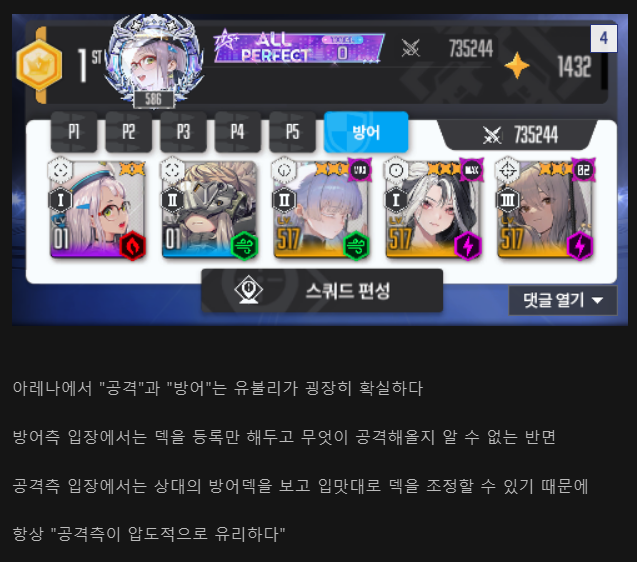
공격측은 항상 방어측에 비해 압도적인 유리함을 가진다
하지만 이 유리함이라는 것은
"각 덱의 상성과 약점을 이해한 것" 을 전제로 한다
상대의 방어 포대를 보고 어디가 약점인지
어떻게 공격해야할지 모른다면
이 유리함을 이용할 수가 없다는 것이다
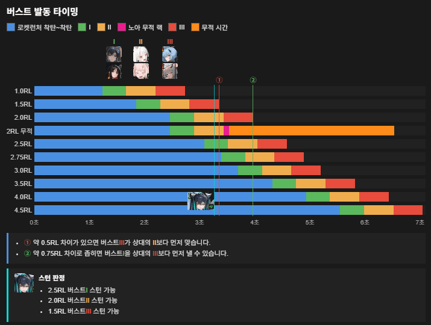
가장 먼저 고려할 점은 버스트 발동 시간이다
상대의 스킬 발동 시간을 예측하고
이에 따라, 상대의 방어 스킬은 무력화 하고
우리의 공격 스킬을 원하는 타이밍에 우겨넣을 수 있다면
모든 전투에서 유리함을 가져갈 수 있다
상대의 버스트가 몇RL에 발동하는지 모르겠다면
https://nikke-deck.com/ko/deck
이 사이트에서 상대방의 덱을 넣어보고
대략적으로 어느정도 타이밍에 발동하는지를 계산해보자
정말 1프레임 단위의 계산이 필요하다면 아래의 사이트를 이용해도 좋다
주요 매커니즘
아레나에서 쓰이는 니케들의 핵심적인 매커니즘을 알아두면
상대방의 덱이 어떤 방식으로 작동할지
어떠한 초식으로 상대방을 무력화 시킬지 생각할 수 있기 때문에
이하의 매커니즘들은 항상 생각해두는게 좋다
1. 무적
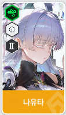
무적 시간동안은 어떠한 방법으로도 저지할 수가 없다
각 무적의 조건, 발동 대상, 유지 시간이 상이하기 때문에
스킬셋을 참고하자
2. 폭발적인 범위 공격
버스트가 발동될시 순간적으로 딜이 들어오는 일섬 계열과
버스트가 발동될시 공격이 강화되어 범위상의 적을 쓸어버리는 지속딜 계열
지혼자 둘다 하는 베스티
등이 있다
1의 무적으로 상쇄하는 것이 중요하다
3. 죽창
버스트 발동시 단일, 혹은 2 개체에 대해 강력한 일점 공격을 가하는 니케들
4. 기절
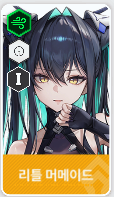
조건에 따라 상대 개체를 기절 시키는 니케들
현 시점에서 네온을 제외하고는 기절에 직접 대항할 수단은 없다고 봐도 좋다
5. 버프 제거 / 특수 버스트 충전
로산나의 스킬셋을 읽고 오면 좋다
전투 시작후 1.6초 언저리에 상대방의 공격력이 가장 높은 둘의 버프를 제거해버리고
양쪽의 니케가 전투 불능이 될때마다 버스트 36.54%를 즉시 충전시킨다
예시1 ) 나유타 레후 덱
먼저 나유타 기반의 덱을 보자
- 나유타는 9초간 무적에 돌입할테니 일반적인 공격은 전부 막힐 것이다
- 레드후드 - 나유타로 이어지는 빠른 버스트를 저지하지 못하면 9초간 나유타가 미쳐 날뛸 것이다
- 나유타 이외의 캐릭터들의 생존이 보장되어 있지 않다
- 주요 딜이 나유타에게만 집중되어 있다
나유타 이외에는 전체 공격기를 방어할 수단이 없다 -> 그러므로 전체 공격기를 들고가자
상대방의 버스트가 굉장히 빠르다 -> 이쪽이 더 빠르게 쓰면 된다
나유타에 딜이 집중되어 있다 -> 차지 형태이기 때문에 세이렌의 일점 스턴에 굉장히 취약하다
나유타 딜은 버스트 발동시의 순간 데미지에 집중되어 있다 -> 한번만 막아내면 지속전은 할만하다
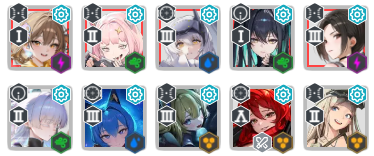
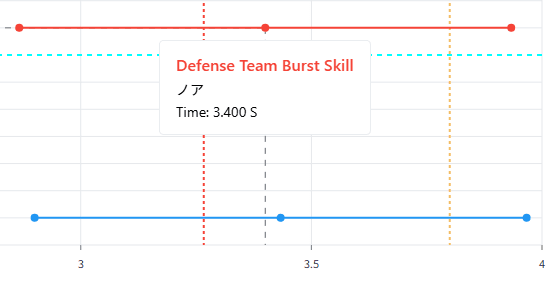
예를들어 세이렌을 기용해보자
일반적인 나유레후는 나유타가 세이렌의 스턴에 막히지만
아마 차속작 << 으로 버스트 발동 시간을 당겨서 스턴 발동 전에 나유타가 버스트를 킬 것이다
(만약 안되어 있다면 상대 레후가 2버스트를 짠 키고 그대로 힘없이 무너져 내린다)
그럼에도 9초 무적중에 3초간 아웃 시키는 세이렌의 스턴은 굉장히 유효하다
또한 나유타의 첫 버스트 데미지와
이어지는 헬름의 죽창을 노아로 흡수한다면
대부분의 딜은 전부 무시할 수 있다
그리고 이어지는 전투에서 상대방을 쓸어담을 범위 딜러와
지속전을 위한 뎀감 (목단) 흡혈 (헬름, 웡)을 장착한다면
나유 레후의 모든 공격이 무효화 된다
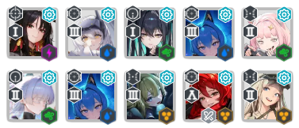
혹은 목단으로 뎀감을 받아 지속전을 대응하는 방법도 있다
단, 세이렌 목단 복합 기용시 버스트 충전률이 굉장히 낮기 때문에
3버스트에 리소스가 많이 든다
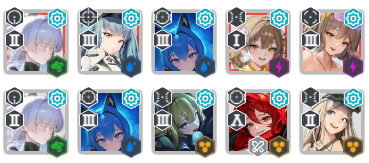
기절을 활용한다면 프리바티도 있다
이렇게 나유타를 미러링한다음
프리바티의 3버스트로 전부 묶어버리고 일방적으로 패는 것이다
방어 수단이 없기 때문에 나유타를 제외하고는 전부 몰살 당한다
이렇게 상대방의 약점이 되는 부분을 찾고
그걸 활용하면서 버스트 시간을 조절할 방법을 찾아서 공략하는 것이
공격덱의 기본 골자가 되겠다
단, 공격덱은 이렇게 상대 방어덱에 기반해서 극단적으로 편성되기 때문에
방덱으로 사용하면 범용성이 떨어져서 효율이 떨어지는 모습을 보임에 주의하자
예시2 ) 아블비덱
- 비스킷의 무적으로 전투 개시후 5초 이상 무적 상태에 돌입한다
- 그 이후에는 블랑의 불굴 10초 무적을 리필할 것이다
- 그동안 미하라의 사슬이 내 니케들의 엉덩이를 쑤실 것이다
- 버스트가 굉장히 느리며 초반 화력은 0에 가깝다
- 블랑의 무적이 끝나는 순간 체력이 1남아 한방만 때려도 터질 것이다
정공법으로는 16초 이상 지속되는 전투 시간동안
미하라의 사슬을 버텨내기란 여간 쉬운 일이 아니다
미하라 사슬만 버티는 거라면 목단+헬름 기반의 든든함으로 버티고도 남지만
최근에는 아니스까지 추가되어서 정말 버티기 힘들어졌다
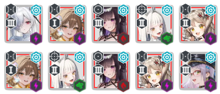
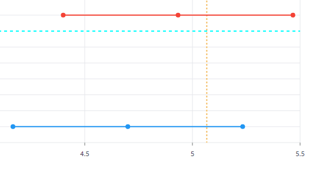
"내가 너보다 조금이라도 더 오래 무적이면 되는거잖아?"
여기에 신데렐라의 디코이는 상대방 런쳐에게 버스트 충전을 추가로 제공해버린다
즉, 상대방이 최대한 늦게 블랑의 불굴을 쓰려고 해도
신데렐라가 억지로 버충을 먹여서 불굴을 빠르게 쓰게 되고
그만큼 무적 시간이 줄어드는 것이다
결국 전투 막바지에는 서로 피1 남은 무적 캐릭들이 쏴대는 상황이 나올텐데
먼저 무적을 킨 만큼 먼저 무적이 끝나버려 패배하게 된다
맞춤식 덱 하나로 정말 쉽게 파훼가 가능하다는 것이다
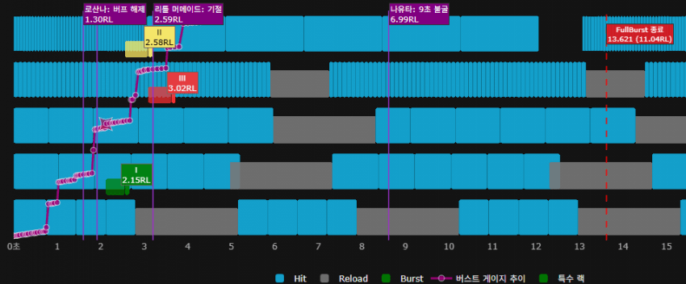
전투의 진행도를 표시하면 이런식으로 나오는데
- 버스트 발동 전까지의 빌드 구간
- 버스트 발동 직후 폭딜 구간
- 풀버스트 지속 시간동안의 지속딜 구간
이 중요한 분기점들이라 생각하자
- 어떻게 안전하게 버스트 충전을 위한 빌드구간을 보낼 것인가?
- 버스트 발동 직후의 폭딜을 어떻게 막을 것인가?
- 무적이 끝나는 이후의 전투 상황을 어떻게 유리하게 가져갈 것인가?
을 생각할 수 있다면 못뚫을 방덱은 없다
그럼에도 못뚫는 상황이 나오는 것은
"투력이 부족함"
"상대 방덱의 약점을 찌를 캐릭터의 부재"
등의 복합적인 이유가 있기 때문에
다양한 파츠를 가지고 있는 만큼, 공격의 바리에이션이 넓어진다
서로가 서로를 무조건 뚫을 수 있는 상황이라면
"쥬얼 더 많이 쓰고 잠 더 안자는 사람이 이긴다"
어떻게 뚫냐고 갤에 물어보는 것도 좋지만
자기가 상대의 방덱을 분석하고
약점을 찔러서 무력화 시키는 것이 아레나의 묘미이다
시간이 남아돈다면 이웃집에 사는 이웃들에게
맞춤식 덱을 들고가서 따뜻한 인사를 전하는 것은 어떨까?